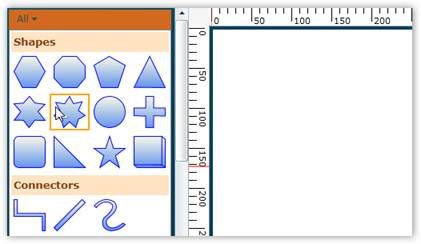
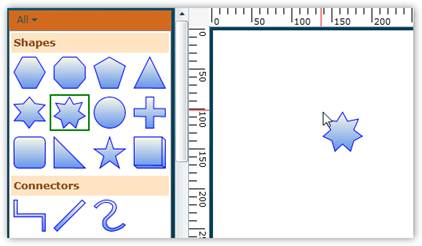
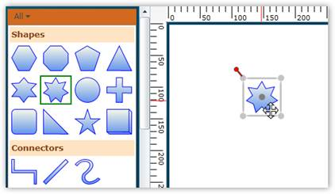

Steps for adding a node to the diagram using the Symbol Palette are:
1. Click the desired node on the Symbol Palette.

Figure 23: Item Selected
2. When pressing the left mouse button, drag the pointer to the drawing area.

Figure 24: Item Dragged
3. Now release the mouse button. The desired node is now on the drawing area at the point where the pointer was released.

Figure 25: Items Dropped